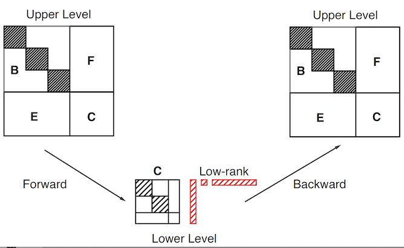
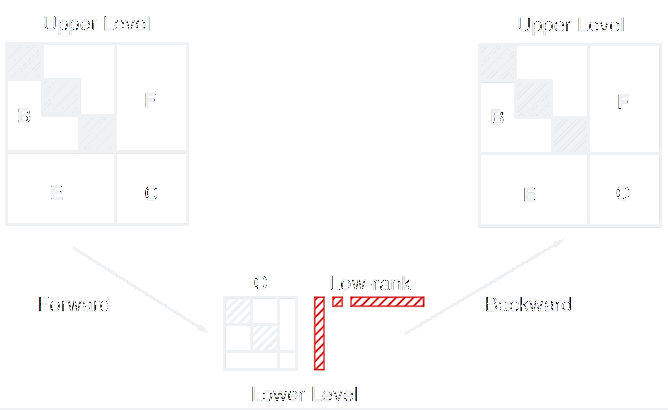

Main Developer
ParGeMSLR: Parallel Generalized Multilevel Low-Rank Preconditioner
ParGeMSLR (Parallel Generalized Multilevel Schur Low-Rank) is an MPI-based C++ library for solving large, sparse symmetric and nonsymmetric linear systems. Its purely algebraic preconditioner combines a multilevel Schur-complement hierarchy with low-rank corrections.

